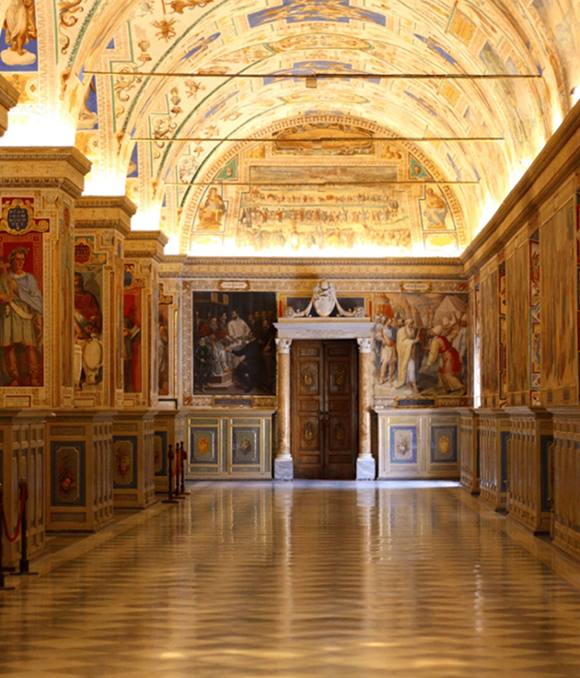
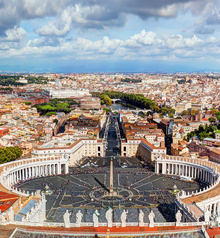
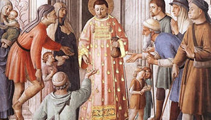
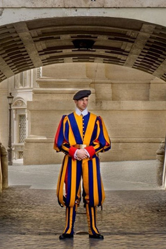
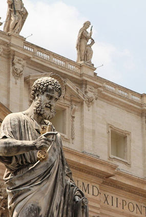
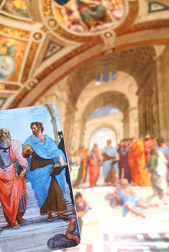
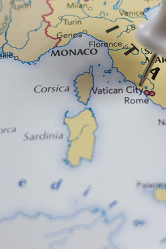
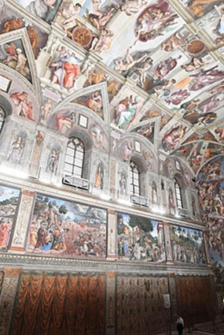

About
mission
- The Vatican Museums must increasingly be a place of beauty and welcome. They must welcome new forms of art. They must open their doors to people from all over the world, as an instrument of dialogue between cultures and religions, a tool for peace. They must be alive! Not dusty collections from the past solely for the “elite” or the “learned”, but a living reality able to conserve the past in order to transmit it to the people of today, starting with the most humble; so that it can be made available to everyone together, with trust in the present and also in the future. Art has an intrinsic salvific dimension and must be open to everything and everyone, offering consolation and hope to all. We must not be afraid of finding and using new symbols, new forms of art and new languages, even those that perhaps do not seem very interesting to evangelisers or curators but which are instead important to the people and are able to speak to them.
- 
- For this reason, a number of homeless people from Rome recently visited the Vatican Museums where they were able to admire the Sistine Chapel. The Vatican Museums are a home for all, and their doors are always open to everyone. They are testimony to the artistic and spiritual aspirations of humanity and the search for that supreme beauty that finds fulfilment in God. And the poor are at the centre of the Gospel, which is the greatest thing we have; they are the privileged recipients of divine mercy. If we remove the poor from the Gospel, it no longer makes sense.
- 
history
- NICHOLAS V (1447-1455)
Fra Angelico and Pinturicchio decorate the private apartments of the Popes
- 
Any history of the museums' collections should rightly begin with the history of the rooms that the Popes over the ages chose as places of residence or private prayer and reflection. The first ones, in chronological order, are the Niccoline Chapel and the Borgia Apartment. In the first year of his papacy, Pope Nicholas V (Parentucelli), one of the greatest humanists of the time, called on Fra Angelico to decorate the private chapel of his apartments in the Apostolic Palace with a cycle of frescoes dedicated to St Stephen and St Lawrence. Fra Angelico, a renowned artist as well as a Dominican friar, depicted scenes from the saints' lives, drawn from the "Acts of the Apostles." en religious and humanistic thought in fifteenth-century painting.
Advice
Useful information for visitors
- 
Clothing Entry to the Vatican Museums, the Sistine Chapel, St. Peter's Basilica and the Vatican Gardens is permitted only to appropriately dressed visitors.
-

Security checks by metal detector To facilitate and speed up security checks by metal detector, visitors are advised to remove inadmissible items from their hand baggage beforehand, and to inform staff in advance.
- 
Photography It is permitted to take photographs, for personal and domestic use only, of the works in all areas of the Vatican Museums, apart from the Sistine Chapel.
- 
Map of the Vatican Museums Visitors are advised to consult the official map of the Vatican Museums when planning and personalising their visit.
- 
Visits to the the Sistine Chapel With respect for and in view of the sanctity of the location, during the visit to the Sistine Chapel visitors are kindly requested to observe absolute silence.